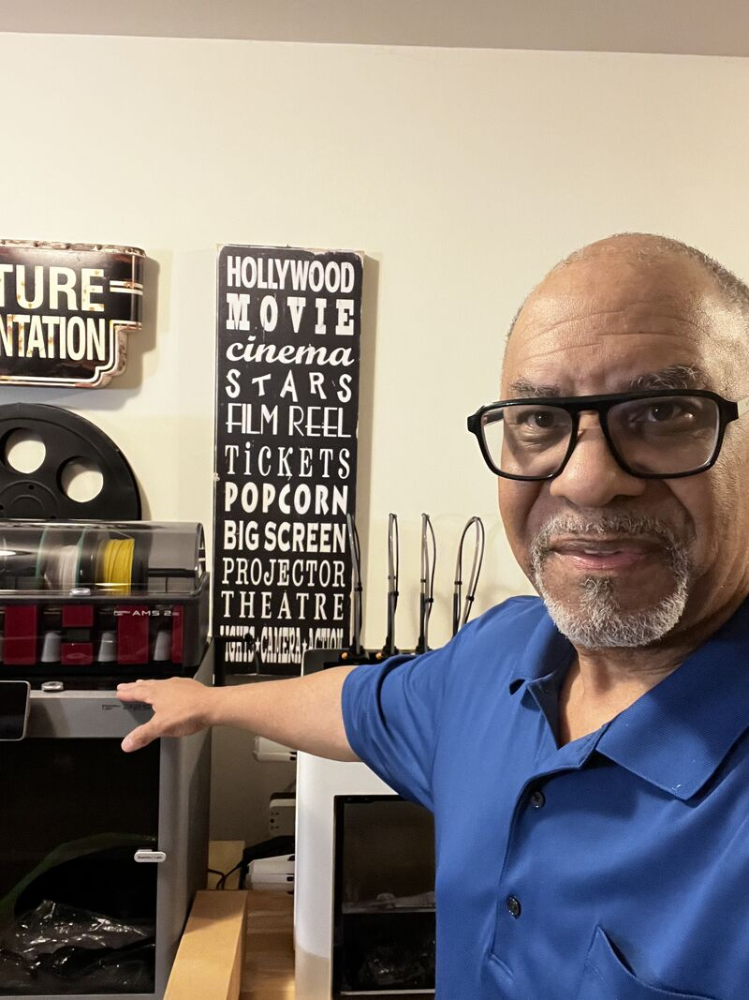
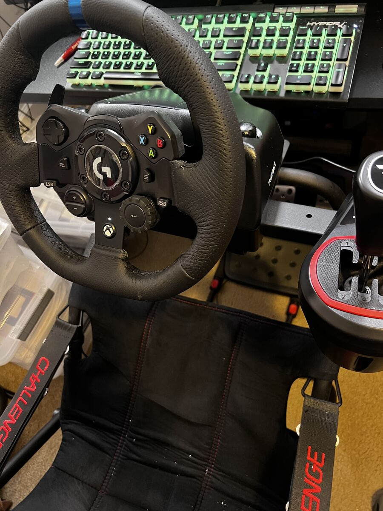
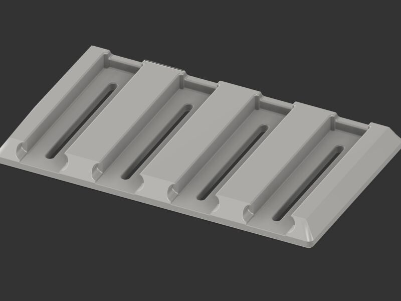
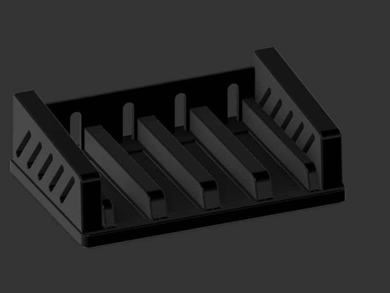
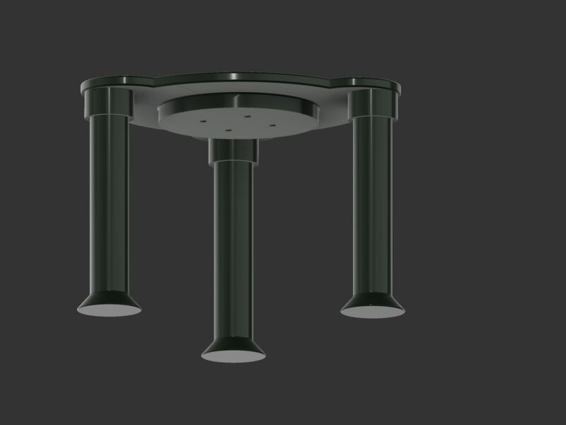
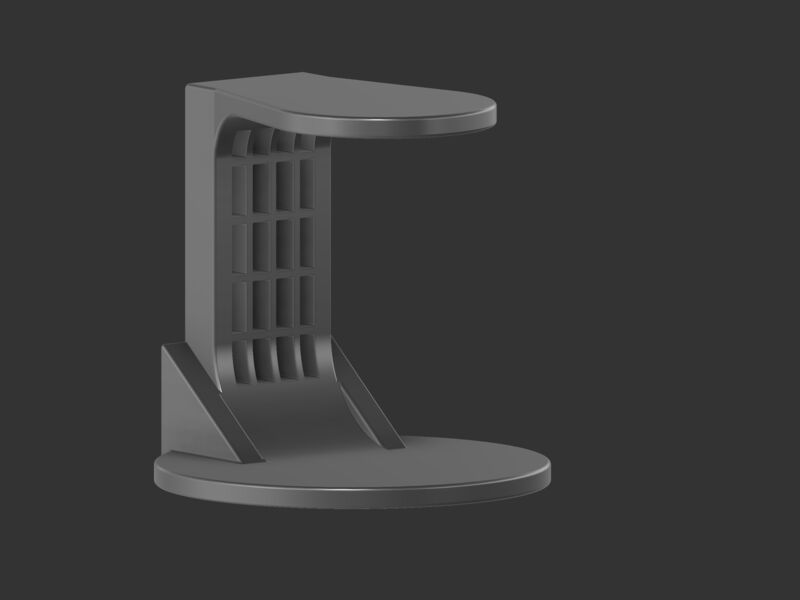
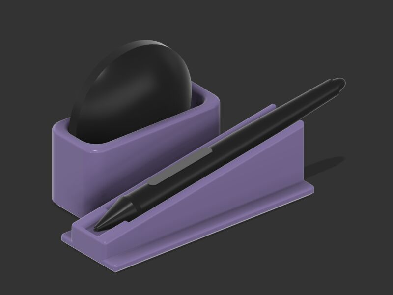
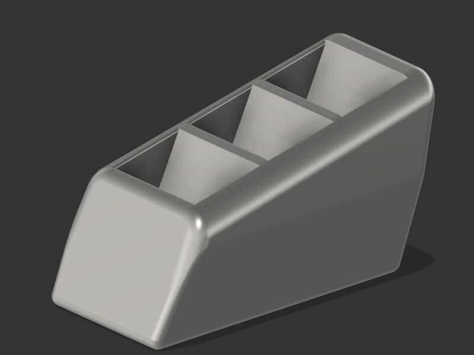

Still curious. Still technical. Still building what comes next.
I'm David — a lifelong technologist, maker, simulator enthusiast, and self-directed learner exploring what useful, creative, technology-driven work can look like in this next chapter.
After years in software engineering, technology leadership, and STEM education, I'm less focused on the titles behind me than on the tools, ideas, and people ahead. Right now that means AI, simulation, digital creation, 3D printing, and the kinds of projects that grow from curiosity, experience, and good conversations.
I'm not looking for a traditional job. I'm looking for connection, collaboration, contract possibilities, and entrepreneurial paths that are still taking shape.

This chapter is about exploration, not arrival
I spent a long time building software, leading technology teams, and helping people learn STEM. That work taught me a lot — most of all that I'm happiest when I'm learning something new and making something real. So instead of settling into a predictable routine, I decided to make this next stretch about experimenting in the open: with AI, simulation, photography and video, 3D printing, microcontroller electronics, and whatever grows out of a good conversation.
The honest version: I don't have a finished offer or a fixed destination yet, and I'd rather show that openly than pretend otherwise. Some of what I try will work, some won't, and I expect the most interesting opportunities to come from people I haven't met yet. That's why this site exists.
What I'm actually spending time on
These are the things I'm actually working with right now — some I know well, others I'm still learning.
Working with AI, not watching it
Hands-on with AI tools for learning, building, and creating — figuring out what they're genuinely good for and where the hype ends.
Flight, truck & bus simulators
X-Plane 12, American Truck Simulator, bus sims — and the pursuit of realism in both software and physical hardware.
3D modeling & 3D printing
Designing and printing real objects — from practical fixes to sim-cockpit parts — and learning the whole pipeline from model to material.
Digital photography & video
Capturing and producing digital images and video, and exploring how modern tools change what one person can create alone.
Programmable controls
Yokes, throttles, pedals, wheels, Stream Decks — the gear that turns a desk into a cockpit, and the configuration craft behind it.
Microcontrollers & circuits
Building circuits and writing code for Arduino, ESP32, and similar boards — small electronic experiments where software intersects with the physical world.
Being a beginner again
Deliberately picking things I'm not good at yet. Experience helps you learn faster; it shouldn't stop you from starting over.
One place several interests converge
Simulation is one of my favorite corners of this exploration, because it pulls so many threads together: computing power, physics, 3D graphics, hardware tinkering, and plain enjoyment. The realism available today — in both the software and the physical equipment — keeps improving, and I like keeping up with that edge. It's one chapter of the story here, not the whole book.

On the sim bench
X-Plane 12
Flight simulation with serious physics — procedures, panels, and the endless depth of doing it right.
American Truck Simulator
Long hauls, real routes, and the surprisingly meditative craft of driving well.
Bus simulators
Urban routes, schedules, and vehicle systems — a different kind of realism challenge.
The physical side
Recent 3D design work
A few pieces from my 3D modeling and printing pipeline — practical designs modeled in CAD, most of them headed for the printer. Nothing here is meant to be gallery art; it's the everyday craft of designing real objects that solve small, real problems.






The experience behind the curiosity
The past isn't the story here, but it explains why my perspective might be useful. I've built systems, led technology organizations, and taught others to do the same — mostly by learning it myself first.
If you're near retirement and nowhere near finished
Much of what I'm doing here is for people in a similar spot: in or near retirement, still curious, still learning, and still drawn to technologies and creative fields that are too often assumed to belong to younger generations. If you've ever set up a 3D printer, learned an AI tool, or built a sim cockpit at a stage of life when many people assume your exploring days are behind you — you're my kind of person.
I'm just as glad to connect with technologists, makers, simulator enthusiasts, AI learners, digital creators, and educators of any age. If you're building or learning something interesting, I'd like to hear about it.
Useful conversations welcome
The whole point of making this chapter visible is connection. If any of this overlaps with what you're learning, flying, driving, printing, or building — I'd genuinely like to hear from you.
- Good forCollaboration ideas, contract possibilities, sim talk, maker questions, AI experiments, or just comparing notes on a shared interest.
- ResponseI read everything and reply to anything genuine.